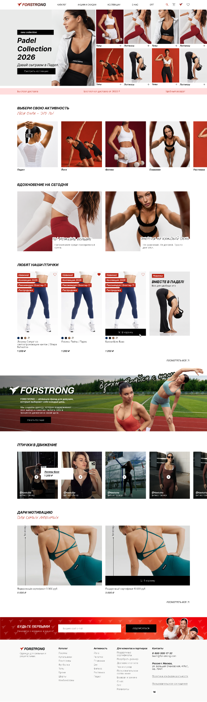
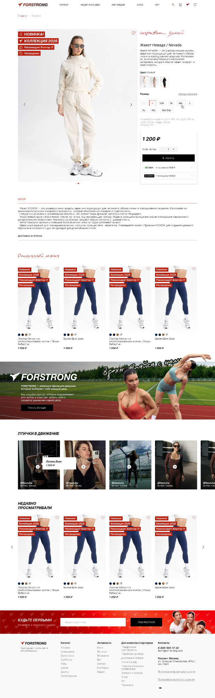
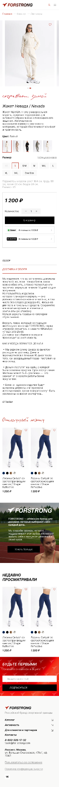
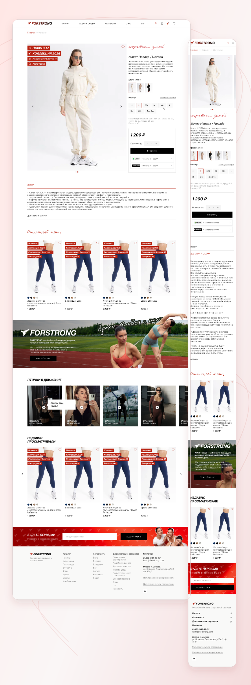

Контекст
В магазине спортивной одежды покупатель выбирает не только вещь, но и образ для своей активности. Главная должна раскрывать коллекции, а карточка товара — давать достаточно информации для выбора конкретной модели.
Полный цикл редизайна главной страницы и карточки товара. Соединила эмоциональную подачу спортивного бренда с последовательным выбором модели, цвета и размера.

Главная страница знакомит с коллекциями, а карточка товара помогает разобраться в конкретной модели.
В магазине спортивной одежды покупатель выбирает не только вещь, но и образ для своей активности. Главная должна раскрывать коллекции, а карточка товара — давать достаточно информации для выбора конкретной модели.
Связать вдохновение и покупку: предложить несколько входов в ассортимент, расставить приоритеты в карточке товара и сохранить сценарий выбора на мобильном экране.
Я была единственным дизайнером проекта и вела редизайн от начала до конца.
Собрала коллекции, активности и товарные подборки в последовательную структуру главной.
Выстроила информацию о модели: галерея, описание, цвет, размер, цена и добавление в корзину.
Адаптировала композицию под узкий экран с последовательным расположением блоков и доступными действиями.
Главная и карточка товара решают разные задачи, сохраняя общий характер бренда.

На главной можно начать с коллекции, категории или вида активности. Такой подход учитывает разные намерения: рассмотреть новинки, найти конкретную вещь или собрать образ для тренировки.
Фотографии показывают одежду в движении, а короткие подписи превращают визуальные подборки в понятные точки входа.

Галерея, описание, цвета и размеры собраны в одном сценарии. Перед кнопкой корзины покупатель видит параметры модели, стоимость и количество.
Сначала помогаю разобраться в товаре, затем предлагаю действие. Размерная информация и условия оплаты дополняют выбор, не подменяя его.

Галерея, параметры модели и покупка выстроены последовательно. Ниже остаются рекомендации и недавно просмотренные товары: знакомство с ассортиментом продолжается и после основного выбора.
Перестроила композицию под узкий экран, сохранив информацию, необходимую для выбора и сравнения вещей.
Белая основа оставляет место образам, чёрный выделяет действия, а красный поддерживает характер бренда.
Красный используется в акцентах и товарных метках. Нейтральная основа объединяет фотографии разных коллекций.
Контрастные заголовки разделяют ассортимент на блоки. Рукописные акценты добавляют эмоциональный слой к товарной подаче.
Самостоятельно разработала обновлённые главную страницу и карточку товара для десктопа и мобильных устройств. Результат — единая система знакомства с коллекциями и выбора модели: от первого впечатления до добавления в корзину.
Десктопные и мобильные версии собраны в две презентации. Изображения открываются отдельно по нажатию.

Расскажите, что нужно вашему продукту. Обсудим задачу, объём дизайна и следующий шаг.